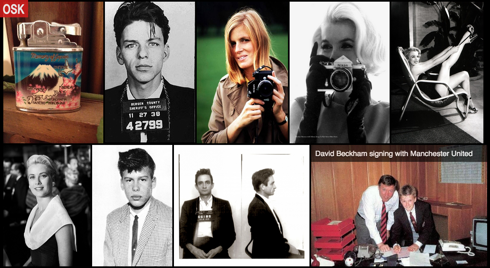

Building Old School Kool
Originally published May 2014
 Old School Kool is a collection of beautiful photos from the past. The images come from Reddit's Old School Cool subreddit, a community described as "a pictorial and video celebration of history's coolest kids, everything from beatniks to bikers, mods to rude boys, hippies to ravers. And everything in between."
I built Old School Kool after running into an app that claimed to have a perfect image layout: an attempt at using 100% of the browser’s viewport to display a series of images without cropping or modifying their proportions.
It's common among popular photo applications like Facebook and Twitter to have photos cropped into a square to show an organized list view. Often, as a result, much of the context of the image is removed (like your face, for example).
The folks at Crispy Mountain, a web development firm, had open-sourced their attempt at the perfect image layout. You can see a similar method with Flickr's new design.
I ended up with this: http://oldschoolkool.com/.
The method is fairly straightforward. The novel aspect of it is to use a linear partition algorithm to determine the number of photos per row. For example, if there is one image with a lot of weight (in this case, a large aspect ratio), it should take precedence in the row. Once that's understood, it's possible to resize each photo in the row using its aspect ratio so that each sits snug side-by-side. As the window is resized, the images are run through the algorithm again taking into account the new screen real-estate. The images are then readjusted.
I had initially designed the app with no database, calling Reddit's API on page load. This has performance issues if I were to get significant traffic along with rate limiting concerns, but this wasn't the biggest issue. Because the perfect layout method relies on knowing an image's aspect ration (image width divided by height) before the image is rendered, I was having some ugly problems of trying to calculate it on the fly. If there was a large image that took time to load, it affected the entire layout. I ended up building a rake task that stores the image reference in a database and a clever gem called FastImage to determine aspect ratios.
The application is built with Backbone.js and Ruby on Rails and the source code is here. Find me on Twitter if you have any questions.